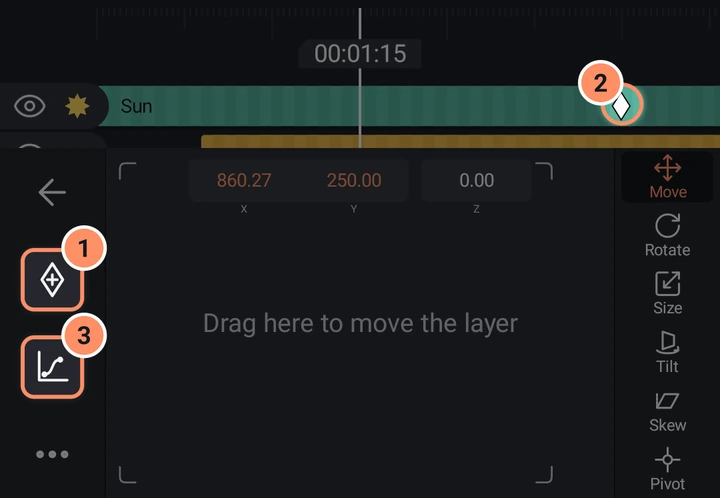
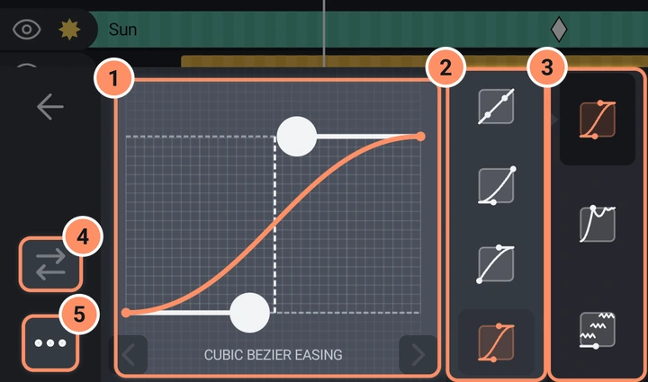

Fotogramas clave y suavizado
Anima cualquier valor a lo largo del tiempo, mueve y reajusta el tiempo de los fotogramas clave, da forma al movimiento con curvas de suavizado.
En esta página
Un fotograma clave guarda el valor de una propiedad en un momento concreto. Entre dos fotogramas clave, la app calcula los valores intermedios, y eso crea la animación. Casi todos los valores se pueden animar: posición, tamaño, rotación, inclinación, sesgo, opacidad, colores, ajustes de trazo, borde y sombra, parámetros de forma, ajustes de cámara y modelo, volumen y ajustes de efectos.
Añadir y quitar fotogramas clave
- Selecciona una capa y abre un panel, por ejemplo Transformar, Opacidad o Efectos.
- Coloca el cabezal de reproducción en el momento que quieras.
- Toca el botón Añadir fotograma clave (un rombo) en la columna izquierda del panel. Cambia a Quitar fotograma clave mientras el cabezal de reproducción está sobre un fotograma clave.

Conviene saber:
- Cuando una propiedad ya tiene un fotograma clave, si la cambias en un momento sin fotograma clave, se crea uno automáticamente. Solo tienes que añadir el primero a mano.
- Si quitas el último fotograma clave de una propiedad, esta se queda fija en ese último valor.
- El botón de fotograma clave se muestra en gris cuando el ajuste no se puede animar. El contenido y el tamaño del texto, y los dibujos a mano alzada, no tienen fotogramas clave. Las formas dibujadas con puntos tienen sus propios fotogramas clave de forma: consulta Formas, dibujo y máscaras.
- En un panel con varias filas (Opciones de forma, Borde y sombra, Opciones de cámara), la fila seleccionada es la que recibe el fotograma clave. En Transformar, Mover anima X, Y y Z a la vez; Tamaño, Girar, Inclinar, Sesgar y Pivote son independientes. Un fotograma clave de Pivote también crea uno para la posición, así la capa permanece donde está.
- En Efectos, cada parámetro de un efecto abierto tiene sus propios fotogramas clave. Toca el nombre del parámetro para seleccionarlo como objetivo.
Fotogramas clave en la línea de tiempo
Los fotogramas clave aparecen como pequeños rombos en la barra de una capa. En la capa seleccionada son más grandes, y el que está bajo el cabezal de reproducción tiene un anillo. Mientras una propiedad o un efecto está abierto, solo se muestran sus rombos; cuando se muestra la cuadrícula de herramientas, se muestran todos los rombos de la capa.
- Salta entre ellos. Retroceder y Avanzar en la barra de reproducción se detienen en los fotogramas clave de la capa seleccionada (solo en los de la propiedad o el efecto abiertos cuando hay uno abierto).
- Mueve un fotograma clave (reajusta el tiempo). Mantén pulsado un rombo en la capa seleccionada hasta que se levante y, después, arrástralo hacia los lados. Se ajusta al cabezal de reproducción, a los marcadores, a los extremos de otras capas y a otros fotogramas clave, y permanece dentro del clip. Cada movimiento es un paso de deshacer. Si no hay ninguna propiedad o efecto abierto, se mueven juntos todos los fotogramas clave de la capa en ese fotograma; si hay uno abierto, solo se mueven los suyos. Si añades un segundo dedo, se cancela el movimiento.
- La velocidad no tiene fotogramas clave propios. Cámbiala a lo largo del tiempo con una curva de velocidad: consulta Fotos, vídeo y velocidad.
No se puede copiar y pegar un solo fotograma clave. Para reutilizar fotogramas clave, copia la capa entera (se copian con ella), copia un efecto o guarda un preajuste.
Suavizado: la forma del movimiento
De forma predeterminada, un valor se mueve en línea recta de un fotograma clave al siguiente. El suavizado cambia la velocidad con la que se mueve entre ambos.
Toca Suavizado (el botón de curva) en un panel. Se abre un gráfico para el segmento que termina en el siguiente fotograma clave. El cabezal de reproducción debe estar entre dos fotogramas clave de la propiedad; si no, la app te pedirá que añadas fotogramas clave primero.

- Arrastra los tiradores del gráfico para cambiar la curva. Una línea discontinua muestra dónde está el cabezal de reproducción dentro del segmento, y las flechas situadas bajo el gráfico pasan al segmento anterior o al siguiente.
- Elige un tipo de curva:
| Tipo | Qué hace |
|---|---|
| SUAVIZADO BÉZIER CÚBICO | Una curva suave con dos tiradores. Preajustes: Lineal, entrada suave, salida suave, entrada y salida suaves. |
| REBOTE | Rebota al final como una pelota. |
| ELÁSTICO | Se pasa de largo y vuelve como un muelle. |
| CÍCLICO | Repite una onda. |
| ALEATORIO | Movimiento aleatorio a saltos. |
| PASOS | Da saltos por pasos en lugar de moverse con suavidad. |
| PASOS ELÁSTICOS | Pasos que se pasan de largo. |
- Invertir la curva refleja la curva (no disponible para Lineal).
- Más incluye Copiar curva y Pegar curva (pegar en el segmento actual), Aplicar curva a todos los fotogramas clave, y Activar sobrepaso o Desactivar sobrepaso (solo Bézier cúbico). El sobrepaso amplía el gráfico para que los tiradores puedan ir más allá de los valores inicial y final, lo que hace que el movimiento se pase de su objetivo y vuelva.
Animaciones predefinidas
No tienes que crear todas las animaciones a mano. Todas estas opciones escriben fotogramas clave o efectos normales que puedes editar después.
- Animar (botón redondo en la esquina inferior derecha de la vista previa): animaciones de entrada, salida y bucle. Consulta Transiciones y animaciones.
- Transiciones entre dos clips.
- Movimientos de cámara como Acercar y Orbitar. Consulta Capas de cámara y 3D.
- Efectos de movimiento como Sacudida automática, Oscilar, Balancear y Girar: consulta Uso de efectos.
- Preajustes que hayas guardado desde otra capa.